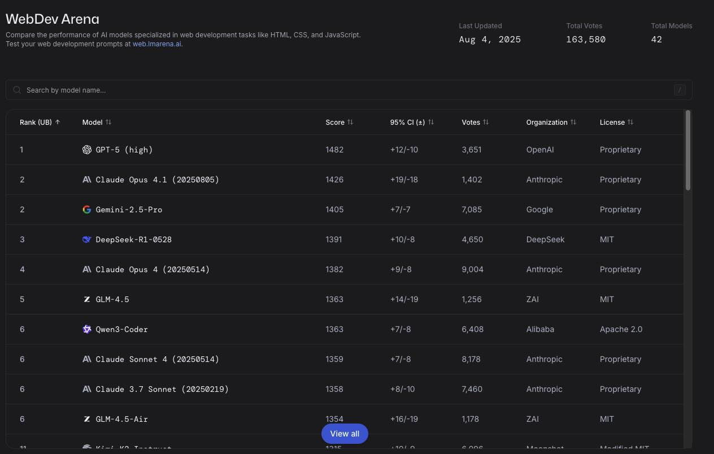
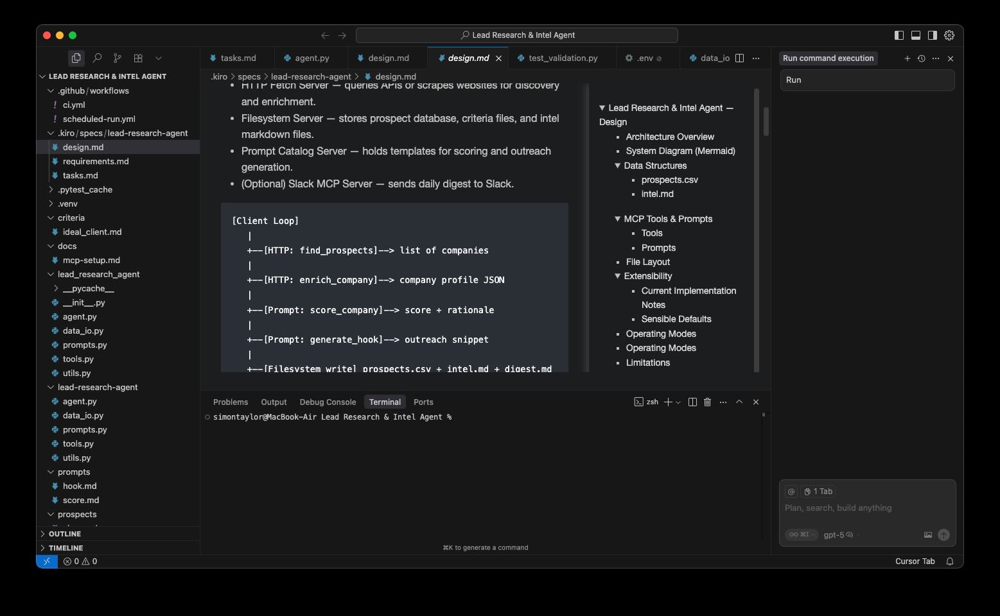

Back to Cursor: Testing GPT-5 for Coding
A few weeks ago, I received an email from the Cursor team that made me stop what I was doing. For a short window of three or four days, GPT-5 would be free to use inside Cursor. I had already been curious about how GPT-5 would perform as a coding assistant, so this was the perfect opportunity to test it.
Cursor and Kiro are both forks of Visual Studio Code, but they take slightly different approaches. Kiro adds a guided workflow that starts with a requirements file, moves to a design file, and finally breaks the work into tasks. Cursor is more free-form, which means the way you structure your work is entirely up to you. For this test I wanted to see whether GPT-5 could work effectively inside a manually structured project, and whether the experience would be noticeably different from Kiro's Claude Sonnet 4 preview mode.
Before starting, I checked the LMArena leaderboards. LMArena is a site where humans compare answers from different models in a blind A/B test, and rankings are based on which responses are preferred. In their Web Dev category, which covers HTML, CSS, and JavaScript tasks, GPT-5 High is in first place by a wide margin. That ranking gave me some confidence that it would perform well for my use case. Interestingly, in their separate Copilot category, GPT-5 does not appear in the top thirteen at all, while Claude 3.5 Sonnet leads the list. This seems unusual, but for this experiment I chose to focus on the Web Dev category where GPT-5 is clearly ahead.
Re-creating the Kiro workflow inside Cursor
Part of the experiment was about workflow portability. I wanted to see whether I could take Kiro's structured approach and replicate it in Cursor so the same project could live in both environments.
I started by creating a .kiro folder in my Cursor project. Inside it I added a specs folder, then a folder for the project name, and inside that three files:
- requirements.md
- design.md
- tasks.md
The project itself was a lead generation tool to help me find prospects. I wanted to use MCP as part of the build to better understand how MCP works. The usefulness of the tool was not the priority; the main goal was to evaluate GPT-5 in a real coding workflow.
I began by prompting GPT-5 in Cursor to write the requirements.md. It produced a clear purpose, a set of goals, and functional requirements. It did not automatically use the Given / When / Then style that Kiro often produces, but I had not explicitly asked for it. My guess is that Kiro achieves that format through hidden prompt instructions.
For the design phase, I asked GPT-5 to use Mermaid syntax so I could view diagrams with the Markdown Preview Enhanced plugin. The resulting design.md described an agent command-line interface with three MCP servers: a prompt catalog, a file system, and an optional Slack integration. The file system MCP would handle folders for prospects, criteria, and reports.
How GPT-5 performed as a coding model
With requirements.md and design.md complete, I moved to tasks.md and began the implementation. This was where I wanted to see how GPT-5 would behave when asked to follow a structured process without a dedicated UI keeping it on track.
The model surprised me in a good way. It was able to interpret the tasks, work through them sequentially, and mark them as complete. It also suggested adjustments to the requirements and task list as we progressed, which gave the process a natural flow. It handled file creation and editing with minimal back-and-forth, and it understood context from earlier parts of the conversation well enough to avoid repeating work unnecessarily.
From a code quality perspective, what GPT-5 produced was solid. It was readable, logically organised, and free from obvious bugs. It showed good awareness of modern coding practices, and its explanations for changes were concise but clear. However, when I compared the overall experience to using Claude Sonnet 4 in Kiro's preview mode, the gap was smaller than I expected. Both models were highly capable, and for my style of work the difference was more subtle than dramatic.
Thoughts on self-hostable alternatives
Both GPT-5 and Claude Sonnet 4 are proprietary and cloud-only, which means there is no way to run them entirely on your own hardware. However, LMArena's Web Dev rankings include an interesting fourth-place contender: DeepSeek R1 0528. This model is MIT-licensed and self-hostable.
Self-hosting comes with an upfront hardware cost, but once the infrastructure is in place you are not paying for API calls. That changes the economics significantly, especially for teams that need to run a large volume of completions. This is a topic I plan to explore in more detail in a future post.
Key takeaways
- GPT-5 is an excellent coding model, performing strongly in web development benchmarks and handling structured workflows well.
- Cursor can replicate Kiro's requirements → design → tasks process with .md files, but you need to manage the discipline yourself.
- Code quality from GPT-5 was high, but in this experiment it felt similar in practice to Claude Sonnet 4.
- Self-hostable models like DeepSeek R1 are becoming competitive with the top cloud-only options and could be worth considering for certain projects.
In the next post, I will look at the economics and trade-offs of running a high-performing model entirely on your own hardware, and how that might change the way teams think about AI-powered development.